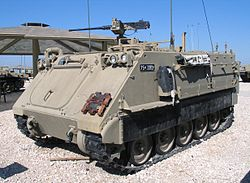
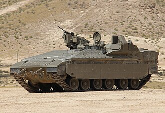
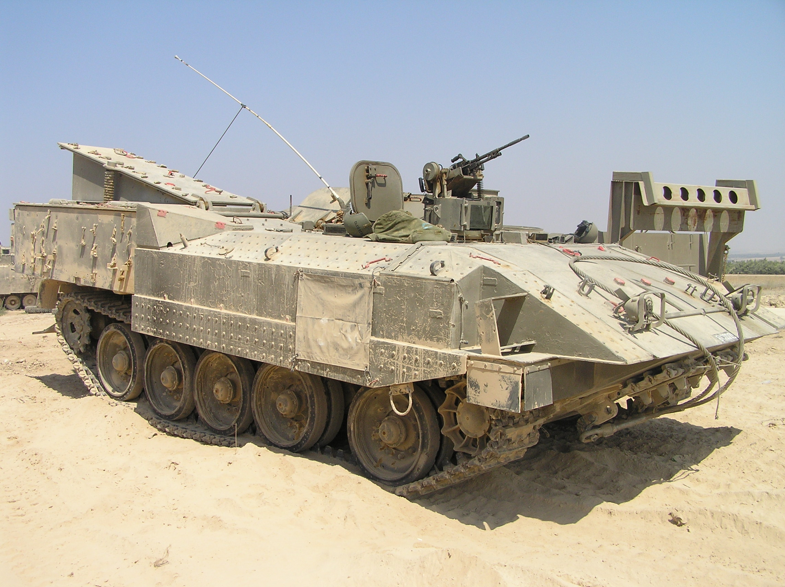
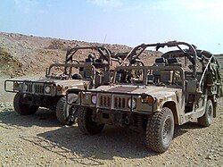
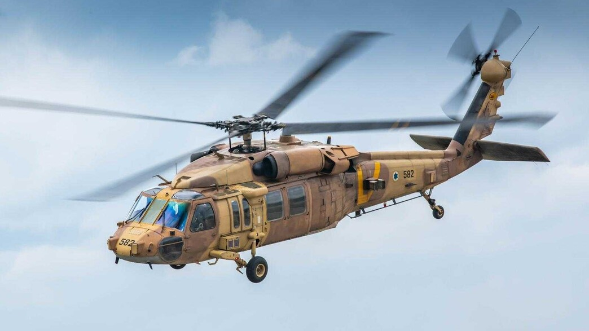
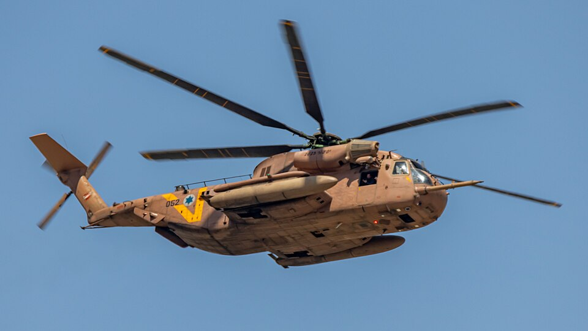

מצילים חיים
בקליק
לומדה דיגיטלית לאנשי הרפואה
מטפל בכיר
פרוטוקולים
1פרוטוקול טיפול בכאב›
2פרוטוקול הטיפול האנטיביוטי בשדה הקרב›
3פרוטוקול השגת גישה למחזור הדם›
4פרוטוקול סיום מאמצי החייאה וקביעת מוות›
5פרוטוקול טיפול בפצוע חזה מונשם›
6פרוטוקול הערכה וטיפול בפצוע חזה נושם ספונטנית›
7פרוטוקול הערכת וניהול נתיב אוויר›
8פרוטוקול החייאת בקרת נזקים בשדה בפצוע מדמם›
→ חזור
תפריט
תרופות ←
מטפל בכיר
תרופות
הרדמה ואלחוש›
אנלגטיקה›
פצוע בהלם עמוק›
אנטיביוטיקה›
פצוע מעיכה›
אב"כ›
שונות›
→ חזור
תפריט
סכמת הטיפול בפצוע בודד ←
לומדה
כלי פינוי
| כלי | מהירות | מיגון | |
|---|---|---|---|
 נגמ"ש פינוי | 40 קמ"ש | נק"ל | |
 נמ"ר פינוי | 60 קמ"ש | נק"ל + נ"ט | |
 אכזרית פינוי | 40 קמ"ש | נק"ל + נ"ט | |
 האמר גנרי | 70 קמ"ש | לא ממוגן | |
 ינשוף | מהיר | לא ממוגן | |
 יסעור | מהיר | לא ממוגן |
⟵ חזרה לתפריט הראשי
▶
—
מאפיינים
יתרונות וחסרונות
כוח רפואי
העמסת נפגעים
מיגון
מהירות
✅ יתרונות
⚠️ חסרונות
—
—